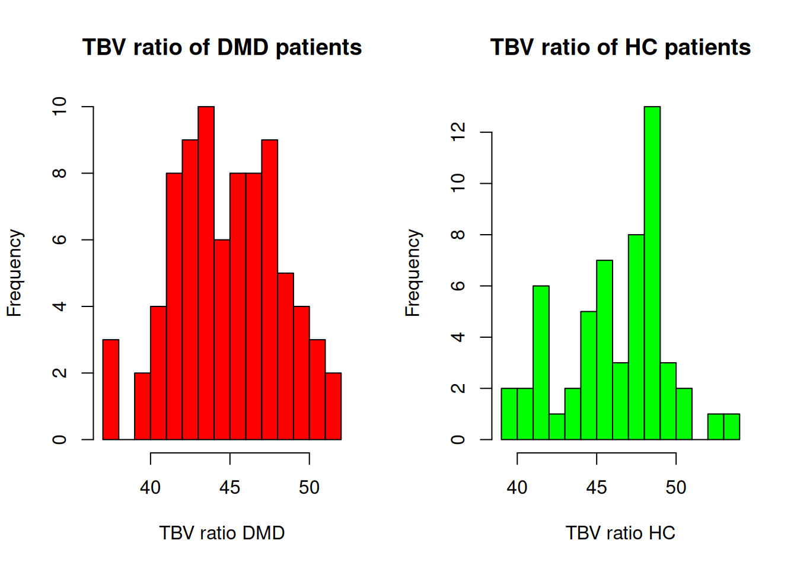

library(readxl)
library(dplyr)
library(ggplot2)
library(DT)
library(plotly)
library(car)
library(readxl)
read_excel_file <- function() {
file_path <- "DATASET_V5_SMO.xlsx"
if (!file.exists(file_path)) stop("File does not exist")
dataset <- read_excel(file_path)
return (dataset)
}
dataset <- read_excel_file()documentation
Introduction
This document outlines the steps taken to analyze a dataset containing information about Muscle Dystrophy (DMD) patients and Healthy Controls (HC)
import data & libraries
We begin by importing the necessary libraries and loading our dataset.
Showing interactive table with DT package
We also install the DT package to create interactive tables by opening R and run the following command: install.packages("DT")
datatable(dataset,
options = list(pageLength = 5, scrollX = TRUE))Handling missing values
We define a function to replace specific values with NA based on predefined rules and apply these rules to our dataset. The rules list can always be expended without changing the function.
replace_values_with_na_mutate <- function(df, rules) {
df %>%
mutate(across(
.cols = names(rules),
.fns = ~ if_else(. %in% rules[[cur_column()]], NA_real_, .)
))
}
rules <- list(
Age = c(9999),
TBV = c(9999),
TBV_Ratio = c(9999),
Mutation = c(9999)
)Subset data
We’ll create subsets of our dataset based on the Disease column to separate DMD (patients with disease) and HC (healthy control patients). We also handle the missing values with the replace_values_with_na_mutate function based on our defined rules.
dmd <- dataset[dataset$Disease == 1, ]
hc <- dataset[dataset$Disease == 0, ]
dmd <- replace_values_with_na_mutate(dmd, rules)
hc <- replace_values_with_na_mutate(hc, rules)# Output the number of patients in the DMD group
message("DMD group amount of patients: ", nrow(dmd), "\n")DMD group amount of patients: 84# Output the number of patients in the HC group
message("HC group amount of patients: ", nrow(hc), "\n")HC group amount of patients: 58Patients Demographics
To get a better understanding of patients demographics, we will categorize patients based on their age group. We will create a new column called age_group and categorize patients based on their age.
We also create the subset of the DMD and HC groups based on patient ID to distinguish adults, kids and the country they’re from. Which in this case can be either the Netherlands or UK. We can count the amount of patients in each group with the nrow() function.
# Subset DMD patients by country and age group
dmd_adults_nl <- dmd[grepl("^DMDBA", dmd$ID), ] # NL adults
dmd_kids_nl <- dmd[grepl("^DMDBNL", dmd$ID), ] # NL kids
dmd_kids_uk <- dmd[grepl("^DMDBUK", dmd$ID), ] # UK kids# Subset HC patients by country and age group
hc_adults_nl <- hc[grepl("^DMDBA", hc$ID), ] # NL adults
hc_kids_nl <- hc[grepl("^DMDBNL", hc$ID), ] # NL kids
hc_kids_uk <- hc[grepl("^DMDBUK", hc$ID), ] # UK kidsCount the number of patients in each subgroup
# Output the number of patients in each DMD subgroup
message("DMD amount of NL adults:", nrow(dmd_adults_nl))DMD amount of NL adults:10message("DMD amount of NL kids:", nrow(dmd_kids_nl))DMD amount of NL kids:44message("DMD amount of UK kids:", nrow(dmd_kids_uk), "\n")DMD amount of UK kids:30# Output the number of patients in each HC subgroup
message("HC amount of NL adults:", nrow(hc_adults_nl))HC amount of NL adults:10message("HC amount of NL kids:", nrow(hc_kids_nl))HC amount of NL kids:32message("HC amount of UK kids:", nrow(hc_kids_uk), "\n")HC amount of UK kids:16# Output the number of kids in the DMD and HC groups
message("DMD amount of NL kids:", nrow(dmd_kids_nl))DMD amount of NL kids:44message("DMD amount of UK kids:", nrow(dmd_kids_uk), "\n")DMD amount of UK kids:30# Output the number of adults in the HC group
message("HC amount of NL adults:", nrow(hc_adults_nl))HC amount of NL adults:10message("HC amount of NL kids:", nrow(hc_kids_nl))HC amount of NL kids:32message("HC amount of UK kids:", nrow(hc_kids_uk), "\n")HC amount of UK kids:16# Output the number of DMD and HC patients from the Netherlands
message("DMD amount of NL adults:", nrow(dmd_adults_nl))DMD amount of NL adults:10message("DMD amount of NL kids:", nrow(dmd_kids_nl))DMD amount of NL kids:44message("HC amount of NL adults:", nrow(hc_adults_nl))HC amount of NL adults:10message("HC amount of NL kids:", nrow(hc_kids_nl))HC amount of NL kids:32# Output the number of DMD and HC patients from the UK
message("DMD amount of UK kids:", nrow(dmd_kids_uk))DMD amount of UK kids:30message("HC amount of UK kids:", nrow(hc_kids_uk))HC amount of UK kids:16Mean and Standard Deviation of Age
We calculate the mean and standard deviation of the age for both DMD and HC patients to understand the distribution of ages in each group.
We calculate the mean of the age for both DMD and HC patients by using the mean function.
mean_dmd_age <- round(mean(dmd$Age, na.rm = TRUE), 1)
message("Mean age of DMD patients:", mean_dmd_age)Mean age of DMD patients:15.2mean_hc_age <- round(mean(hc$Age, na.rm = TRUE), 1)
message("Mean age of HC patients:", mean_hc_age)Mean age of HC patients:16.4We also calculate the standard deviation of the age for both groups using the sd function.
sd_dmd_age <- round(sd(dmd$Age, na.rm = TRUE), 1)
message("Standard deviation of DMD patients age:", sd_dmd_age)Standard deviation of DMD patients age:5sd_hc_age <- round(sd(hc$Age, na.rm = TRUE), 1)
message("Standard deviation of HC patients age:", sd_hc_age)Standard deviation of HC patients age:5.4LeveneTest
# Levene's test for homogeneity of variances
patients_lavene_test <- rbind(
transform(dmd, group = "DMD"),
transform(hc, group = "HC")
)
# Convert group to a factor
patients_lavene_test$group <- as.factor(patients_lavene_test$group)
# Perform Levene's test for homohoeneity of variances
levene_test <- leveneTest(Age ~ group, data = patients_lavene_test)
print(levene_test)Levene's Test for Homogeneity of Variance (center = median)
Df F value Pr(>F)
group 1 0.0025 0.9606
139 Descriptive analysis
Here we will perform a descriptive analysis of the dataset to understand the distribution of ages for DMD and HC patients. We will create box plots, histograms, and QQ plots to visualize the age distribution of patients in each group.
Box plots age distribution
We will create box plots to visualize the distribution of ages for DMD and HC patients. The box plots will help us understand the age distribution of patients in each group. We will use the boxplot function to create the plots
# on the y-axis we need to label it age and on the x-axis we need to label it DMD and HC
par(mfrow = c(1, 2))
boxplot(dmd$Age, main = "DMD Age Distribution", ylab = "Age", col = "red")
boxplot(hc$Age, main = "HC Age Distribution", ylab = "Age", col = "green")
histogram plots age distribution
We will create histograms to visualize the age distribution of DMD and HC patients. The histograms will help us understand the distribution of ages in each group. We will use the hist function to create the plots.
# Create histograms to visualize the age distribution of DMD and HC patients
par(mfrow = c(1, 2))
hist(dmd$Age, main = "DMD Age Distribution", xlab = "Age", col = "red")
hist(hc$Age, main = "HC Age Distribution", xlab = "Age", col = "green")
qq plots age distribution
We will create QQ plots to compare the age distribution of DMD and HC patients with a normal distribution. The QQ plots will help us understand if the age distribution is normal or not. We will use the qqnorm and qqline functions to create the plots.
# Create QQ plots to compare the age distribution of DMD and HC patients with a normal distribution
par(mfrow = c(1, 2))
qqnorm(dmd$Age, main = "QQ plot of DMD Age Distribution"); qqline(dmd$Age, col = "red")
qqnorm(hc$Age, main = "QQ plot of HC Age Distribution"); qqline(hc$Age, col = "green")
Safiro Wilk Test for Age Distribution
# Shapiro-Wilk normality test for DMD age distribution
print(shapiro.test(dmd$Age))
Shapiro-Wilk normality test
data: dmd$Age
W = 0.92884, p-value = 0.0001934# Shapiro-Wilk normality test for HC age distribution
print(shapiro.test(hc$Age))
Shapiro-Wilk normality test
data: hc$Age
W = 0.93503, p-value = 0.003953Density Plots for Age Distribution
# Create density plots to visualize the age distribution of DMD and HC patients
par(mfrow = c(1, 2))
plot(density(dmd$Age, na.rm = TRUE), main = "Density DMD Age Distribution", col = "red")
plot(density(hc$Age, na.rm = TRUE), main = "Density HC Age Distribution", col ="green")Map Visualization of countries with patients
Here we visualize the countries where the patients are. Our dataset contains patients from the Netherlands and the UK. We will plot the countries on the map to visualize the distribution of patients.
# Load the required package
library(maps)
# No margin
par(mar=c(0,0,0,0))
# World map focused on Western Europe and the UK
map('world',
col="#d9d9d9", fill=TRUE, bg="white", lwd=0.5,
mar=rep(0,4), border="#999999", ylim=c(45, 60), xlim=c(-10, 10)
)
# Cities coordinates
London <- c(-0.1276, 51.5074) # Longitude and latitude for London
Amsterdam <- c(4.9041, 52.3676) # Longitude and latitude for Amsterdam
# Data frame
data <- rbind(London, Amsterdam) %>%
as.data.frame()
colnames(data) <- c("long", "lat")
# Show the cities on the map
points(x=data$long, y=data$lat, col="darkred", cex=2.5, pch=19)
Visit Analysis
Filter data by the visit column
First we filter the data by the visit column to get the unique values in the column.
# Filter data based on visit numbers
dmd_first_visit <- dmd %>% filter(Visit == 1)
dmd_second_visit <- dmd %>% filter(Visit == 2)
hc_first_visit <- hc %>% filter(Visit == 1)
hc_second_visit <- hc %>% filter(Visit == 2)Count the number of patients in each group
Next we output the number of patients in each group for the first and second visit.
message("DMD second and first visit: ", nrow(dmd))DMD second and first visit: 84message("DMD first visit:", nrow(dmd_first_visit))DMD first visit:57message("DMD second visit:", nrow(dmd_second_visit), "\n")DMD second visit:27message("HC second and first visit: ", nrow(hc))HC second and first visit: 58message("HC first visit:", nrow(hc_first_visit))HC first visit:42message("HC second visit:", nrow(hc_second_visit), "\n")HC second visit:16Categorize patients into different age groups based on the visit number using the mutate and case_when functions to get the age distrubution of the patients.
# Categorize DMD patients based on age groups for the first visit
dmd_first_visit_ages <- dmd_first_visit %>%
mutate(
age_group = case_when(
Age <= 5 ~ "0 - 5 years old",
Age <= 12 ~ "6 - 12 years old",
Age <= 19 ~ "13 - 19 years old",
Age <= 25 ~ "20 - 25 years old",
TRUE ~ "26+ years old"
)
)hc_first_visit_ages <- hc_first_visit %>%
mutate(
age_group = case_when(
Age <= 5 ~ "0 - 5 years old",
Age <= 12 ~ "6 - 12 years old",
Age <= 19 ~ "13 - 19 years old",
Age <= 25 ~ "20 - 25 years old",
TRUE ~ "26+ years old"
)
)
Note
Age Groups: Defined as “0 - 5 years old,” “6 - 12 years old,” “13 - 19 years old,” “20 - 25 years old,” and “26+ years old.”
Count the number of patients in each age group for the first visit
# Define age groups
age_groups <- c("0 - 5 years old", "6 - 12 years old", "13 - 19 years old", "20 - 25 years old", "26+ years old")# DMD Age Group Analysis
message("DMD first visit ages:")DMD first visit ages:for (age_group in age_groups) {
message(age_group, " dmd patients:", nrow(dmd_first_visit_ages[dmd_first_visit_ages$age_group == age_group, ]))
}0 - 5 years old dmd patients:06 - 12 years old dmd patients:2213 - 19 years old dmd patients:2120 - 25 years old dmd patients:1426+ years old dmd patients:0message("HC first visit ages:")HC first visit ages:for (age_group in age_groups) {
message(age_group, " hc patients:", nrow(hc_first_visit_ages[hc_first_visit_ages$age_group == age_group, ]))
}0 - 5 years old hc patients:06 - 12 years old hc patients:1213 - 19 years old hc patients:1720 - 25 years old hc patients:926+ years old hc patients:4Calculate the percentage of patients in each age group
# DMD Age Group Percentage Analysis
message("DMD Patients first visit in percentages")DMD Patients first visit in percentagesfor (age_group in age_groups) {
patients_count <- nrow(dmd_first_visit_ages[dmd_first_visit_ages$age_group == age_group, ])
percentage <- round((100 / nrow(dmd) * patients_count), 1)
message(age_group, " patients in percentage:", percentage, "%")
}0 - 5 years old patients in percentage:0%6 - 12 years old patients in percentage:26.2%13 - 19 years old patients in percentage:25%20 - 25 years old patients in percentage:16.7%26+ years old patients in percentage:0%# HC Age Group Percentage Analysis
for (age_group in age_groups) {
patients_count <- nrow(hc_first_visit_ages[hc_first_visit_ages$age_group == age_group, ])
percentage <- round((100 / nrow(hc) * patients_count), 1)
message(age_group, " patients in percentage:", percentage, "%")
}0 - 5 years old patients in percentage:0%6 - 12 years old patients in percentage:20.7%13 - 19 years old patients in percentage:29.3%20 - 25 years old patients in percentage:15.5%26+ years old patients in percentage:6.9%Percentage calculation:
(100 / total number of patients) * number of patients in each age groupHC Age Group Displays the count of HC patients in each age group for the first visit
Scanner Groups Analysis
Here we analyze scanner groups for both DMD and HC patients to determine the number of patients in each group.
Filter data by the scanner group column
We define the scanner groups for DMD and HC patients and filter the data based on the scanner group.
# Define scanner groups
scanner_groups <- c("DMDBNL", "DMDBUK", "DMDBA")Assign patients to scanner groups based on the Scannertype column
# Assign scanner groups to DMD dataset
dmd_scannertype <- dmd %>%
mutate(
scanner_group = case_when(
Scannertype == 0 ~ "DMDBNL",
Scannertype == 1 ~ "DMDBUK",
Scannertype == 2 ~ "DMDBA"
)
)# Assign scanner groups to HC dataset
hc_scannertype <- hc %>%
mutate(
scanner_group = case_when(
Scannertype == 0 ~ "DMDBNL",
Scannertype == 1 ~ "DMDBUK",
Scannertype == 2 ~ "DMDBA"
)
)
Note
- Scanner Groups: Defined as “DMDBNL,” “DMDBUK,” and “DMDBA.”
Count the number of patients in each scanner group
# Output the number of patients in each scanner group
scanner_group <- unique(dmd_scannertype$scanner_group)
# DMD Scanner Group Analysis
for (scanner_group in scanner_group) {
patients_count <- nrow(dmd_scannertype[dmd_scannertype$scanner_group == scanner_group, ])
message("DMD patients with scanner group ", scanner_group, " is: ", patients_count)
}DMD patients with scanner group DMDBA is: 10DMD patients with scanner group DMDBNL is: 44DMD patients with scanner group DMDBUK is: 30# Output the number of patients in each scanner group
scanner_group <- unique(dmd_scannertype$scanner_group)
# HC Scanner Group Analysis
for (scanner_group in scanner_group) {
patients_count <- nrow(hc_scannertype[hc_scannertype$scanner_group == scanner_group, ])
message("HC patients with scanner group ", scanner_group, " is: ", patients_count)
}HC patients with scanner group DMDBA is: 10HC patients with scanner group DMDBNL is: 32HC patients with scanner group DMDBUK is: 16Calculate the percentage of patients in each scanner group
# Output the number of patients in each scanner group
scanner_group <- unique(dmd_scannertype$scanner_group)
# DMD Scanner Group Analysis
for (scanner_group in scanner_groups) {
patients_count <- nrow(dmd_scannertype[dmd_scannertype$scanner_group == scanner_group, ])
percentage <- round(100 / nrow(dmd) * patients_count, 1)
message("Percentage of DMD patients with scanner group ", scanner_group, " is: ", percentage, "%")
}Percentage of DMD patients with scanner group DMDBNL is: 52.4%Percentage of DMD patients with scanner group DMDBUK is: 35.7%Percentage of DMD patients with scanner group DMDBA is: 11.9%scanner_groups <- unique(hc_scannertype$scanner_group)
# Calculate percentage of patients in each scanner group for HC dataset
for (scanner_group in scanner_groups) {
patients_count <- nrow(hc_scannertype[hc_scannertype$scanner_group == scanner_group, ])
percentage <- round(100 / nrow(hc) * patients_count, 1)
message("Percentage of HC patients with scanner group ", scanner_group, " is: ", percentage, "%")
}Percentage of HC patients with scanner group DMDBA is: 17.2%Percentage of HC patients with scanner group DMDBNL is: 55.2%Percentage of HC patients with scanner group DMDBUK is: 27.6%TBV Ratio Analysis
We will conduct a thorough analysis of the TBV ratio for both DMD and HC patients. This will involve calculating the mean and standard deviation, creating histograms, QQ plots, and boxplots to visualize data distributions, as well as assasing correlations and performing linear regression anal
Calculate Mean and Standard Deviation of TBV Ratio
We first calculate the mean and standard deviation of the TBV ratio for both DMD and HC groups.
# Mean of the TBV ratio for DMD patients
dmd_mean_tbv_ratio <- round(mean(dmd$TBV_Ratio, na.rm = TRUE), 1)
message("Mean of the TBV ratio of DMD patients:", dmd_mean_tbv_ratio)Mean of the TBV ratio of DMD patients:44.9# Mean of the TBV ratio for HC patients
hc_mean_tbv_ratio <- round(mean(hc$TBV_Ratio, na.rm = TRUE), 1)
message("Mean of the TBV ratio of HC patients:", hc_mean_tbv_ratio)Mean of the TBV ratio of HC patients:46.1# Standard deviation of the TBV ratio for DMD patients
dmd_sd_tbv_ratio <- round(sd(dmd$TBV_Ratio, na.rm = TRUE), 1)
message("Standard deviation of the TBV ratio of DMD patients:", dmd_sd_tbv_ratio)Standard deviation of the TBV ratio of DMD patients:3.3# Standard deviation of the TBV ratio for HC patients
hc_sd_tbv_ratio <- round(sd(hc$TBV_Ratio, na.rm = TRUE), 1)
message("Standard deviation of the TBV ratio of HC patients:", hc_sd_tbv_ratio)Standard deviation of the TBV ratio of HC patients:3.2Visualize TBV Ratio Distribution
We use histograms, QQ plots, and boxplots to visualize the distribution of TBV ratios for both groups.
The histograms display the distribution of TBV ratios for DMD and HC groups.
# Histograms
par(mfrow = c(1, 2))
hist(dmd$TBV_Ratio, main = "TBV ratio of DMD patients", xlab = "TBV ratio DMD", col = "red", breaks = 20)
hist(hc$TBV_Ratio, main = "TBV ratio of HC patients", xlab = "TBV ratio HC", col = "green", breaks = 20)
The QQ plots are used to compare the distribution of TBV ratios for DMD and HC groups with a normal distribution.
# QQ plots
par(mfrow = c(1, 2))
qqnorm(dmd$TBV_Ratio, main = "QQ plot of TBV ratio of DMD patients")
qqline(dmd$TBV_Ratio, col = "red")
qqnorm(hc$TBV_Ratio, main = "QQ plot of TBV ratio of HC patients")
qqline(hc$TBV_Ratio, col = "green")
The boxplots visualize the distribution of TBV ratios for DMD and HC groups.
par(mfrow = c(1, 2))
bb <- boxplot(dmd$TBV_Ratio, main = "TBV ratio of DMD patients", col = "red")
boxplot(hc$TBV_Ratio, main = "TBV ratio of HC patients", col = "green")
Density Plots
We create density plots to further examine the distribution of TBV ratios for both DMD and HC groups.
# Density plots
par(mfrow = c(1, 2))
plot(density(dmd$TBV_Ratio, na.rm = TRUE), main = "Density TBV ratio of DMD", col = "red")
plot(density(hc$TBV_Ratio, na.rm = TRUE), main = "Density TBV ratio of HC", col = "green")
Scatter Plots and Correlation
These scatter plots visualize the relationship between age and TBV ratio, and the correlation is calculated for both groups
We create scatter plots to visualize the relationship between age and TBV ratio for both DMD and HC groups.
# Scatter plots
par(mfrow = c(1, 2))
plot(dmd$Age, dmd$TBV_Ratio, main = "Scatter Age and TBV ratio of DMD", col = "red")
plot(hc$Age, hc$TBV_Ratio, main = "Scatter Age and TBV ratio of HC", col = "green")We calculate the correlation between age and TBV ratio for both DMD and HC groups.
# Correlation
correlation_dmd <- round(cor(dmd$Age, dmd$TBV_Ratio, use = "complete.obs"), 2)
correlation_hc <- round(cor(hc$Age, hc$TBV_Ratio, use = "complete.obs"), 2)
message("Correlation between Age and TBV ratio of DMD:", correlation_dmd)Correlation between Age and TBV ratio of DMD:-0.76message("Correlation between Age and TBV ratio of HC:", correlation_hc)Correlation between Age and TBV ratio of HC:-0.87Pearson Correlation Test
We perform a Pearson correlation test to assess the relationship between age and TBV ratio for both groups.
# Pearson correlation test
cor_test_dmd <- cor.test(dmd$Age, dmd$TBV_Ratio)
print(cor_test_dmd)
Pearson's product-moment correlation
data: dmd$Age and dmd$TBV_Ratio
t = -10.305, df = 78, p-value = 3.278e-16
alternative hypothesis: true correlation is not equal to 0
95 percent confidence interval:
-0.8390434 -0.6476358
sample estimates:
cor
-0.7593061 # Pearson correlation test
cor_test_hc <- cor.test(hc$Age, hc$TBV_Ratio)
print(cor_test_hc)
Pearson's product-moment correlation
data: hc$Age and hc$TBV_Ratio
t = -12.923, df = 54, p-value < 2.2e-16
alternative hypothesis: true correlation is not equal to 0
95 percent confidence interval:
-0.9215734 -0.7860176
sample estimates:
cor
-0.8692852 Linear Regression Analysis
We perform linear regression analysis to assess the relationship between age and TBV ratio for both groups. The results are displayed in the summary output.
# Linear regression of DMD
lm_dmd <- lm(dmd$TBV_Ratio ~ dmd$Age)
print(summary(lm_dmd))
Call:
lm(formula = dmd$TBV_Ratio ~ dmd$Age)
Residuals:
Min 1Q Median 3Q Max
-6.0198 -1.5815 0.1796 1.4978 4.1034
Coefficients:
Estimate Std. Error t value Pr(>|t|)
(Intercept) 52.44149 0.77661 67.53 < 2e-16 ***
dmd$Age -0.49831 0.04835 -10.30 3.28e-16 ***
---
Signif. codes: 0 '***' 0.001 '**' 0.01 '*' 0.05 '.' 0.1 ' ' 1
Residual standard error: 2.161 on 78 degrees of freedom
(4 observations deleted due to missingness)
Multiple R-squared: 0.5765, Adjusted R-squared: 0.5711
F-statistic: 106.2 on 1 and 78 DF, p-value: 3.278e-16# Linear regression of HC
lm_hc <- lm(hc$TBV_Ratio ~ hc$Age)
print(summary(lm_hc))
Call:
lm(formula = hc$TBV_Ratio ~ hc$Age)
Residuals:
Min 1Q Median 3Q Max
-4.1989 -1.0317 -0.1051 1.2050 4.1351
Coefficients:
Estimate Std. Error t value Pr(>|t|)
(Intercept) 54.84216 0.71088 77.15 <2e-16 ***
hc$Age -0.52687 0.04077 -12.92 <2e-16 ***
---
Signif. codes: 0 '***' 0.001 '**' 0.01 '*' 0.05 '.' 0.1 ' ' 1
Residual standard error: 1.615 on 54 degrees of freedom
(2 observations deleted due to missingness)
Multiple R-squared: 0.7557, Adjusted R-squared: 0.7511
F-statistic: 167 on 1 and 54 DF, p-value: < 2.2e-16Plot Linear Regression
Here we plot the linear regression of DMD and HC groups to visualize the relationship between age and TBV ratio. The blue line represents the linear regression line.
# Plot linear regression
par(mfrow = c(1, 2))
plot(dmd$Age, dmd$TBV_Ratio, main = "Linear regression of DMD", col = "red")
abline(lm_dmd, col = "blue")
plot(hc$Age, hc$TBV_Ratio, main = "Linear regression of HC", col = "green")
abline(lm_hc, col = "blue")Noramity Test
We apply the Shapiro-Wilk test to check the normality of the TBV distributions for both groups.
# Shapiro-Wilk normality test for DMD
print(shapiro.test(dmd$TBV_Ratio))
Shapiro-Wilk normality test
data: dmd$TBV_Ratio
W = 0.98771, p-value = 0.6373# Shapiro-Wilk normality test for HC
print(shapiro.test(hc$TBV_Ratio))
Shapiro-Wilk normality test
data: hc$TBV_Ratio
W = 0.96443, p-value = 0.09733Levene’s Test
We perform Levene’s test to assess the homogeneity of variances between DMD and HC groups.
# Levene's test for homogeneity of variances
tbv_lavene_test <- rbind(
transform(dmd, group = "DMD"),
transform(hc, group = "HC")
)
# Convert group to a factor
tbv_lavene_test$group <- as.factor(tbv_lavene_test$group)
# Perform Levene's test for homohoeneity of variances
levene_test_tbv <- leveneTest(TBV_Ratio ~ group, data = tbv_lavene_test)
print(levene_test_tbv)Levene's Test for Homogeneity of Variance (center = median)
Df F value Pr(>F)
group 1 0.0769 0.7819
135 T-Test
We perform a t-test to compare the TBV ratio between DMD and HC groups.
# T-test for TBV ratio
t_test <- t.test(dmd$TBV_Ratio, hc$TBV_Ratio)
print(t_test)
Welch Two Sample t-test
data: dmd$TBV_Ratio and hc$TBV_Ratio
t = -2.1883, df = 119.45, p-value = 0.03059
alternative hypothesis: true difference in means is not equal to 0
95 percent confidence interval:
-2.3583958 -0.1178387
sample estimates:
mean of x mean of y
44.85104 46.08915 Mutation Group analysis
We will analyze the mutation group for both DMD and HC patients to determine the number of patients in each group.
Assign patients to mutation groups based on the Mutation column
categorize_mutation <- function(df) {
df %>%
mutate(
mutation_group = case_when(
Mutation == 0 ~ "Healthy",
Mutation == 1 ~ "Proximal",
Mutation == 2 ~ "Distal",
Mutation == 3 ~ "Unknown",
)
)
}Count the number of patients in each mutation group
# Assign mutation groups to DMD dataset
dmd_mutation <- categorize_mutation(dmd)
# Output the number of patients in each mutation group
mutation_group <- unique(dmd_mutation$mutation_group)
# DMD Mutation Group Analysis
for (mutation_group in mutation_group) {
patients_count <- nrow(dmd_mutation[dmd_mutation$mutation_group == mutation_group, ])
message("DMD patients with mutation group ", mutation_group, " is: ", patients_count)
}DMD patients with mutation group NA is: 84DMD patients with mutation group Distal is: 46DMD patients with mutation group Proximal is: 46DMD patients with mutation group Unknown is: 14# Assign mutation groups to DMD dataset
hc_mutation <- categorize_mutation(hc)
# Output the number of patients in each mutation group
mutation_group <- unique(hc_mutation$mutation_group)
# DMD Mutation Group Analysis
for (mutation_group in mutation_group) {
patients_count <- nrow(hc_mutation[hc_mutation$mutation_group == mutation_group, ])
message("HC patients with mutation group ", mutation_group, " is: ", patients_count)
}HC patients with mutation group Healthy is: 58Calculate the percentage of patients in each mutation group
We calculate the percentage of patients in each mutation group for both DMD and HC groups. The percentage is calculated as (100 / total number of patients) * number of patients in each mutation group.
print_group_percentages <- function(patient_type, df, group_column) {
if (!(group_column %in% names(df))) {
stop(paste("Column", group_column, "does not exist in the dataframe."))
}
# Filter out rows with NA values in the specified group column
df_filtered <- df[!is.na(df[[group_column]]), ]
# Check if there are any unique values left in the specified group column
if (length(unique(df_filtered[[group_column]])) == 0) {
stop("No unique values found in the specified group column.")
}
groups <- unique(df_filtered[[group_column]])
print(groups)
total_patients <- nrow(df_filtered)
print(total_patients)
print(nrow(df))
for (group in groups) {
if (!is.na(group)) {
patients_count <- nrow(df_filtered[df_filtered[[group_column]] == group, ])
# print(patients_count)
# print(total_patients)
percentage <- round(100 / total_patients * patients_count, 3)
message("Percentage of ", patient_type, " patients with mutation group ", group, " is: ", percentage, "%")
}
}
}Now we calculate the percentage of patients in each mutation group for both DMD and HC groups.
# Calculate the percentage of patients in each mutation group for DMD
dmd_mutation <- categorize_mutation(dmd)
print_group_percentages("DMD", dmd_mutation, "mutation_group")[1] "Distal" "Proximal" "Unknown"
[1] 73
[1] 84Percentage of DMD patients with mutation group Distal is: 47.945%Percentage of DMD patients with mutation group Proximal is: 47.945%Percentage of DMD patients with mutation group Unknown is: 4.11%# Calculate the percentage of patients in each mutation group for HC
hc_mutation <- categorize_mutation(hc)
print_group_percentages("HC", hc_mutation, "mutation_group")[1] "Healthy"
[1] 58
[1] 58Percentage of HC patients with mutation group Healthy is: 100%Corticosteroid Analysis
We will analyze the corticosteroid treatment for both DMD and HC patients to determine the number of patients in each group.
Assign patients to corticosteroid groups based on the Corticosteroid column
categorize_corticosteroid <- function(df) {
df %>%
mutate(
corticosteroid_group = case_when(
Corticosteroid == 0 ~ "No",
Corticosteroid == 1 ~ "Yes",
Corticosteroid == 2 ~ "Unknown"
)
)
}Count the number of patients in each corticosteroid group
# Assign corticosteroid groups to DMD dataset
dmd_corticosteroid <- categorize_corticosteroid(dmd)
# Output the number of patients in each corticosteroid group
corticosteroid_group <- unique(dmd_corticosteroid$corticosteroid_group)
# DMD Corticosteroid Group Analysis
for (corticosteroid_group in corticosteroid_group) {
patients_count <- nrow(dmd_corticosteroid[dmd_corticosteroid$corticosteroid_group == corticosteroid_group, ])
message("DMD patients with corticosteroid group ", corticosteroid_group, " is: ", patients_count)
}DMD patients with corticosteroid group No is: 23DMD patients with corticosteroid group NA is: 84DMD patients with corticosteroid group Yes is: 71# Assign corticosteroid groups to HC dataset
hc_corticosteroid <- categorize_corticosteroid(hc)
# Output the number of patients in each corticosteroid group
corticosteroid_group <- unique(hc_corticosteroid$corticosteroid_group)
# HC Corticosteroid Group Analysis
for (corticosteroid_group in corticosteroid_group) {
patients_count <- nrow(hc_corticosteroid[hc_corticosteroid$corticosteroid_group == corticosteroid_group, ])
message("HC patients with corticosteroid group ", corticosteroid_group, " is: ", patients_count)
}HC patients with corticosteroid group No is: 58Calculate the percentage of patients in each corticosteroid group
We calculate the percentage of patients in each corticosteroid group for both DMD and HC groups. The percentage is calculated as (100 / total number of patients) * number of patients in each corticosteroid group.
print_group_percentages <- function(patient_type, df, group_column) {
if (!(group_column %in% names(df))) {
stop(paste("Column", group_column, "does not exist in the dataframe."))
}
df <- df %>% filter(!is.na(!!sym(group_column)))
# Calculate group percentages and output the results
group_counts <- df %>%
count(!!sym(group_column)) %>%
mutate(percentage = round(100 / sum(n) * n, 1))
message(patient_type, " results :")
#message(patient_type, " patients by ", group_column, " :")
print(group_counts)
}Now we calculate the percentage of patients in each corticosteroid group for both DMD and HC groups.
# Calculate the percentage of patients in each corticosteroid group for DMD
dmd_corticosteroid <- categorize_corticosteroid(dmd)
print_group_percentages("DMD", dmd_corticosteroid, "corticosteroid_group")DMD results :# A tibble: 2 × 3
corticosteroid_group n percentage
<chr> <int> <dbl>
1 No 13 17.6
2 Yes 61 82.4# Calculate the percentage of patients in each corticosteroid group for HC
hc_corticosteroid <- categorize_corticosteroid(hc)
print_group_percentages("HC", hc_corticosteroid, "corticosteroid_group")HC results :# A tibble: 1 × 3
corticosteroid_group n percentage
<chr> <int> <dbl>
1 No 58 100